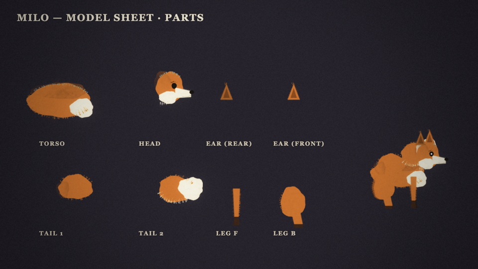
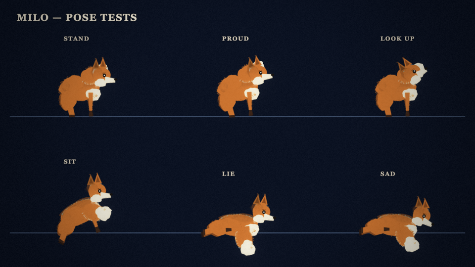
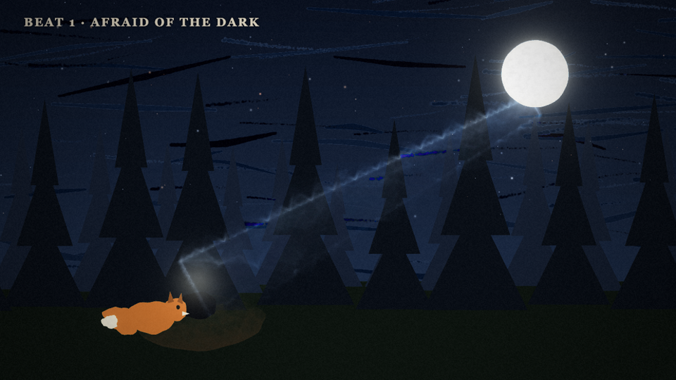
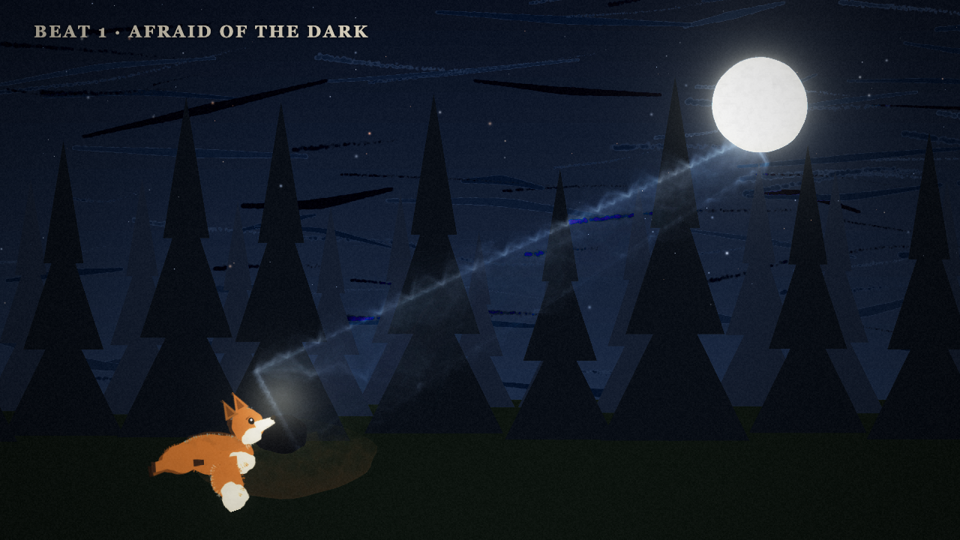

Repeatable pipeline: brief → model sheet → rigged parts → integration. This page fills in as each stage lands. Refresh to update.
Full brief: docs/characters/milo.md. Anxious, mischievous, tender. Tail = 40% of silhouette. Must read at 120px and 600px.



